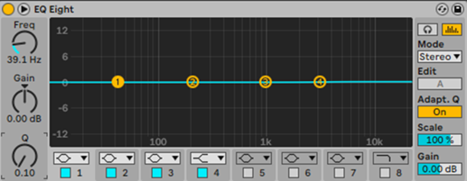
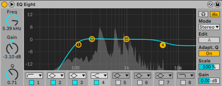
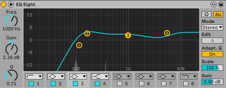
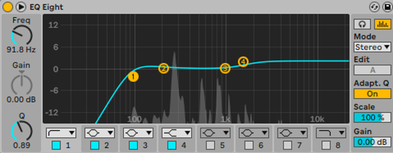
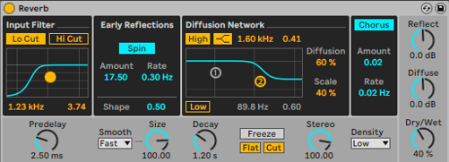
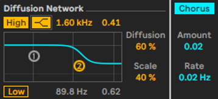
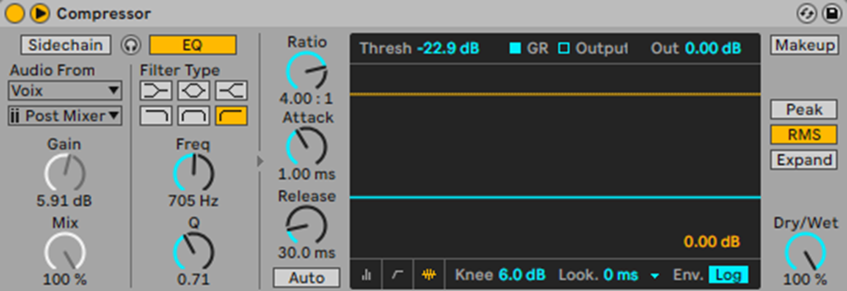
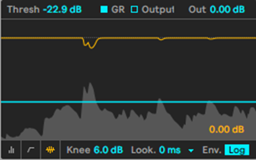
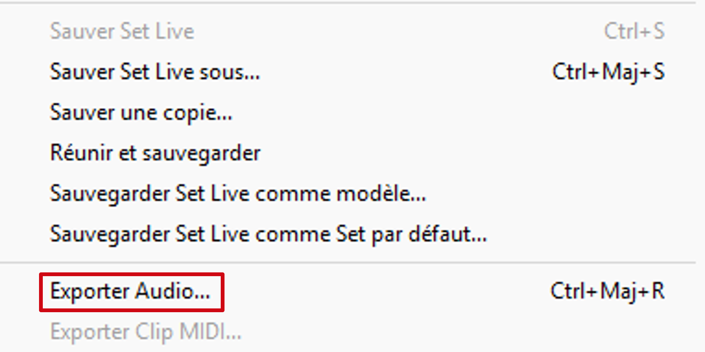

Etude detailler d'une tache (a l'heure actuelle ou je fais le site (05/05/2025) je ferais que celle de terminal si le lendemain matin je m'en souviens je ferais aussi ceux de premiere)

Problématique :
Suite à la prise de voix d’une chanteuse, il restait quelques fausses notes :
celle-ci nous a demandé de remédier au problème et de rendre l’écoute agréable en gommant les imperfections.
Pour commencer, j’ai ouvert le fichier de la musique qui est un fichier en .ALS (pour les fichiers Abelton Live)
Nous allons donc arriver sur cette fenêtre.

Nous pouvons voir sur la timeline plusieurs lignes : celle de tout en haut représente l’instrumental fait au piano et en dessous, cela représente la voix de la chanteuse. Ensuite sur le côté gauche, nous pouvons voir plusieurs menus :
- Tout
- Sons
- Batteries
- Instruments
- Effets audio
- Effets MIDI
- Modulateurs
- Max for Live
- Plug-ins
- Clips
- Sample
- Grooves
- Accordages
- Modéles
Ensuite en dessous nous avons les effets audios
Pour l’instant nous n’avons que Melodyne qui est ouvert :

Maintenant, pour accéder à Melodyne depuis Abelton Live, il faut appuyer sur la clé à molette en haut du module
Ensuite, après avoir appuyé sur la clé à molette, je suis arrivé sur cet écran :

J’ai changé l’algorithme de son qui est réglé automatiquement sur percussion,
Je suis allé dans le menu algorithme et que j’ai choisie le mode Mélodique, qui est le mode pour la voix :

Ensuite, pour pouvoir avoir la voix de la chanteuse dans le logiciel :
- J’ai appuyé sur le bouton “transférer” en haut à gauche,
- Je suis retourné dans Abelton Live
- J’ai placé mon curseur au début de la chanson
- J’ai laissé la chanson tourner pour que Melodyne enregistre la musique et place les notes au bon endroit

Dans Melodyne, il y a 6 menus qui permettent de modifier les notes :
- Le premier menu permet de modifier les graves et les aigus d’une note.
- Le deuxième permet de changer la hauteur des notes.
- Le troisième permet de changer le format.
- Le quatrième permet de modifier l’amplitude.
- Le cinquième permet de changer le timing.
- Et le sixième permet de couper la note en deux.
Ensuite, je relançais la musique et j’ajustais lorsque j’entendais ce que je pensais être une fausse note.
Tout au long de la modification des notes, j’avais cet écran avec des notes :

Pour réussir, il fallait que j’utilise l’outil qui me permettait de changer la tonalité des notes.
Ensuite, quand une note utilise deux tonalités différentes, j’utilise l’outil de coupe pour couper la note en deux et pouvoir l’ajuster en mettant une partie en aigu et une plus grave si besoin.
(Les notes :
 )
) J’ai aussi utilisé l’outil de timing pour réduire la taille de la note quand elle était trop longue (la taille en longueur).
Ensuite, quand j’avais fini la piste, elle ressemblait au schéma ci-dessous :

(Les notes sont en gris car, normalement, c’est un logiciel payant et, dans mon cas, j’utilisais la version d’essai temporaire).
Ensuite, après avoir tout remis au propre et tout replacer, j’ai ajouté quelques effets sur la voix de la chanteuse pour améliorer encore plus l’écoute.
Pour commencer, j’ai ajouté un EQ Eight qui est un equalizer.
La fenêtre ressemble à ceci :

Ensuite, j’ai changé les styles de graphes de fréquences :

- Le 1er a été organisé de cette manière pour couper tous les sons à partir de X Hz : c’est à nous de le placer,
- les 2 et 3 sont positionnés de cette manière pour pouvoir monter et descendre les fréquences à volonté,
- et le 4 a été positionné de cette manière pour signifier la fin de la bande.


la meilleur pour a été celle ci :

Car tout est bien dedans, elle bloque les fréquences en dessous de la voix humaine (la voix humaine étant entre 100 et 300 Hz).
Ensuite j’ai rajouté de la reverb :

J’ai rajouté une reverb en low-cut, ce qui veut dire que le son va augmenter progressivement alors que dans un hi-cut, il va s’atténuer progressivement.
Pour continuer, dans la partie Diffusion Network qui est normalement neutre :
J’ai activé le high pour qu’il puisse faire un fondu correct,
J’ai choisi ce mode de son :

Et pas celui-là,
 car sinon il aurait coupé les fréquences aiguës de manière trop sèche, du coup le résultat est le suivant :
car sinon il aurait coupé les fréquences aiguës de manière trop sèche, du coup le résultat est le suivant : 
Pour continuer j’ai ajouté un compresseur :

On peut voir que je l’ai réglé sur 705 Hz (le compresseur s’active cette fois sur toutes les bandes son : instrumentales, voix, sample etc…).
Quand le compresseur joue sur une note qui est assez haute, la barre jaune en haut réagit pour baisser la fréquence comme ceci :

On peut voir qu'à un moment il y a eu une note aiguë, le compresseur fait en sorte de baisser la note pour la laisser dans la tranche de fréquence.
Dès que j’ai fini de tout faire (ajout du compresseur, ajout de la reverb, etc…),
Je vais exporter le projet mais il faut faire très attention au mode utilisé, car il y en a plusieurs :

voici le avant :
et voici le après :